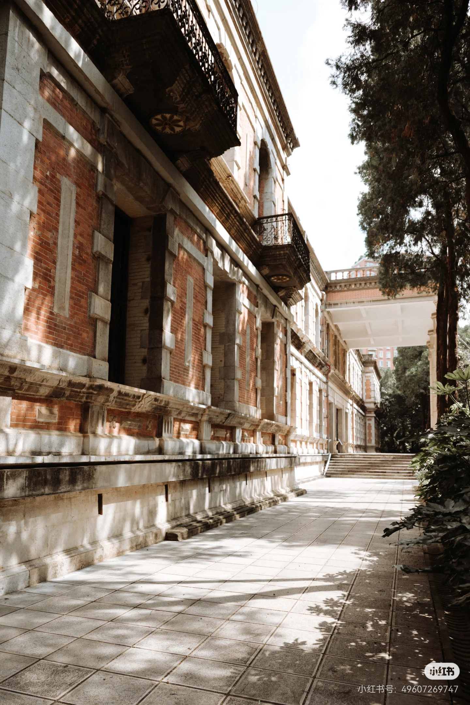
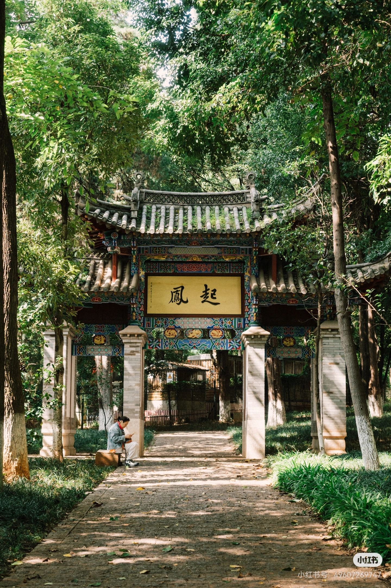

云南大学至公堂原为明清云南贡院的主体建筑，是科举时代举行乡试大典的核心场所，林则徐曾在此主考。。
1946年闻一多先生亦在此发表著名的《最后一次演讲》，使其成为民主与学术精神的重要地标。

凤起坊是云南贡院（今云南大学东陆校区）的入口牌坊之一，与左侧的“腾蛟坊”成对，取名自《滕王阁序》“腾蛟起凤”，寓意学子才华出众。
坊额题“明经取士”，原为明清贡院大门，2003年重建，现为校园历史地标。
